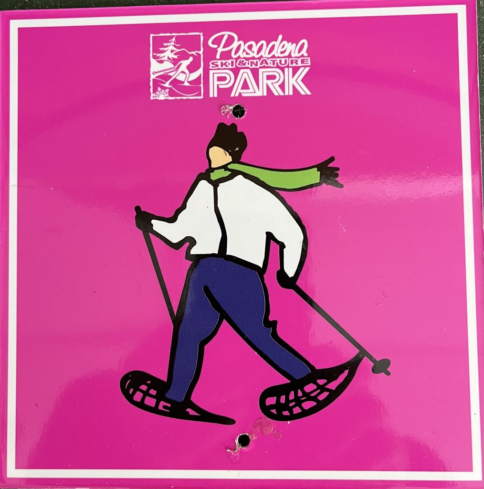
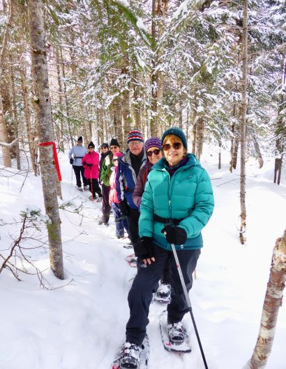

Snowshoeing
13 kilometers of trails through mixed boreal forest
13 kilometers of snowshoe trails take you through a mixed forest of fir, spruce, birch, and maple. Streams and wet areas with interesting plants, ferns, and moss in summer and fall become beautiful snowy features in a quiet winter wonderland.
The “You are here” signs keep you on track at intersections. Please take a trail map or a photo with you to ensure you are always aware of your location. This is important if an emergency occurs, and you must be located.


Snowflake Loop & Finlay's Loop
Snowflake Loop is under 2.0 km. It begins and ends near the lodge. It is a pleasant outing, climbing gently through varied terrain and brings you back to where you started. You are back at the chalet for hot chocolate and a warm fire before your toes get cold.
Finlay's Loop continues up the mountain about halfway around Snowflake. It is 4.4 km long. It runs parallel to and crosses the ski trails at several points. The firepit is a popular stop to have a cup of tea. Bring a thermos of something warm and take a break. The full Finlay outing is close to 5 km, and the kilometer signs mark the trail in both directions.
Wally's Snowshoe Trail connects 2 points on Finlay – refer to the trail map for the exact location.
Boreal Trail and connectors
Our newest snowshoe outing is the Boreal Trail. Travelling clockwise, it meanders outside the current park ski trails on the east side and parallels Caribou to the farthest western point, in total 4.46 kilometers. There are four connectors between the Boreal Trail and Finlay's Loop – Otter Brook, Foxtrot, Snowy Owl and Whiskey Jack – varying in length from 173-570 meters. Chickadee is a short trail between two points on the western tip of Boreal Trail.